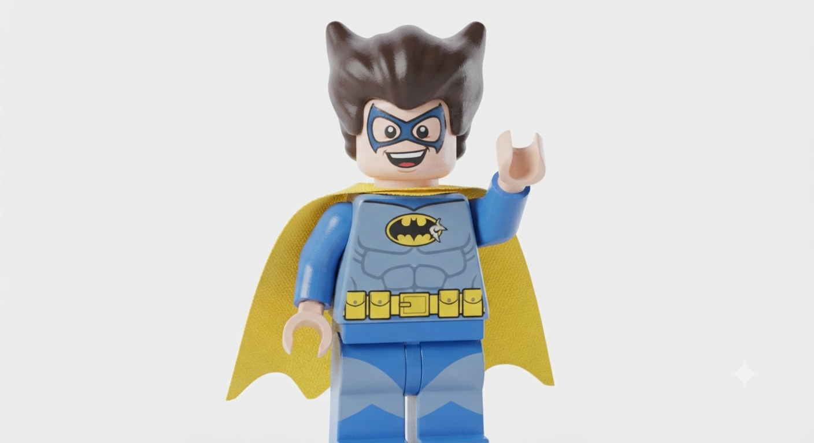
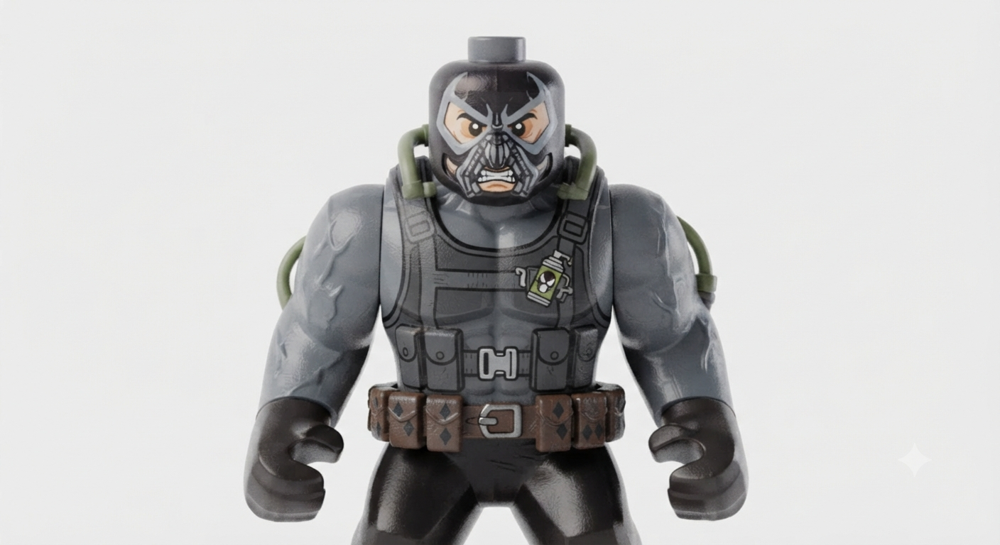
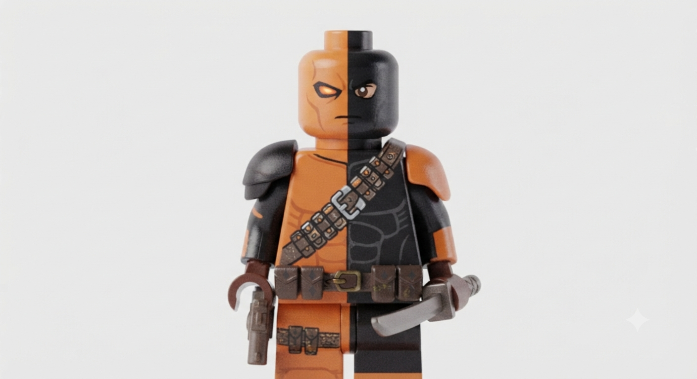

.jpg)
Batman
Protagonista central. Su viaje abarca desde sus entrenamientos iniciales con la Liga de las Sombras hasta consolidarse como el protector definitivo de Gotham.

Protagonista central. Su viaje abarca desde sus entrenamientos iniciales con la Liga de las Sombras hasta consolidarse como el protector definitivo de Gotham.
.png)
Inspirado en la versión interpretada por Jeffrey Wright (The Batman), es el incorruptible aliado de la policía de Gotham que colabora codo a codo con el vigilante en las calles.
.png)
Una antihéroe y ladrona felina cuya relación con Batman oscila entre el romance y el tira y afloja criminal.
.png)
El joven acróbata del circo adoptado por Bruce Wayne, que decide unirse a su cruzada para encontrar un propósito y hacer justicia.
.png)
Inteligente, analítica y decidida, Barbara opera tanto en el campo de batalla como desde las sombras usando sus grandes dotes informáticas.
.png)
La evolución madura de Dick Grayson tras dejar atrás el manto de Robin, operando de manera independiente pero alineado con la Bat-familia.

Hija de Ra's al Ghul y pieza clave dentro de la narrativa vinculada a los orígenes de Bruce y la Liga de las Sombras.

El fiel mayordomo, mentor y apoyo moral y técnico de Bruce desde la Batcueva.

Director de Tecnologías en Empresas Wayne, encargado de proveer los prototipos de vehículos y mejoras de equipo.

El idealista padre de Bruce; su trágico asesinato y visión filantrópica son la brújula moral que impulsa toda la cruzada de Batman en el juego.

El ancla emocional de la familia; su memoria en la Mansión Wayne evita que Bruce cruce la línea hacia la brutalidad.

El corrupto comisionado de policía comprado por la mafia; busca sabotear a Batman y proteger el estatus quo criminal.

El teniente bruto y corrupto que usa su placa para extorsionar a los ciudadanos y proteger los negocios turbios de la ciudad.

El cínico y desalineado detective veterano que, pese a dudar al inicio, termina reconociendo a Batman como su único aliado contra la corrupción policial.

Una joven y valiente detective incorruptible que arriesga su puesto para actuar como informante secreta de la Bat-familia dentro del GCPD.

El curtido guardia de Arkham —famoso por su prótesis de gancho tras sobrevivir a Killer Croc— que ayuda con datos tácticos del manicomio.

Funciona como un divertido personaje secundario no jugable que regenta la tienda de cosméticos, permitiendo comprar trajes alternativos y decoraciones para la Batcueva.
.png)
La mente criminal más caótica de Gotham. En este juego cuenta con aspectos visuales que rinden homenaje directo a la versión clásica de Jack Napier (1989).

La fiel y desquiciada compañera del Guasón, ágil, impredecible y armada con su clásico mazo.
.png)
El magnate del bajo mundo que opera desde sus clubes nocturnos, con guiños estéticos a interpretaciones cinematográficas clásicas.

Un coloso musculoso impulsado por el compuesto de Venom. En la historia destaca por poner en graves aprietos físicos a Batman.

El cabecilla milenario de la Liga de las Sombras, que busca purgar Gotham a través de planes a gran escala.
.png)
Un científico convertido en criminal movilizado por la desesperación de salvar a su esposa enferma.
.png)
Ecoterrorista capaz de controlar la flora de Gotham; su historia está ligada a los experimentos energéticos iniciales de la ciudad.
.png)
El otrora fiscal de distrito cuya psique quedó dividida, decidiendo todo a través del lanzamiento de su moneda.
.png)
Maestro del miedo que utiliza su infame gas toxicológico para perturbar mentalmente a Batman.

El mercenario definitivo, contratado por las altas esferas criminales para frenar al vigilante en combates tácticos exigentes.
.png)
Pirómano equipado con un traje de vuelo propulsado por fuego y lanzallamas que incendia las zonas urbanas.

Un zombi gigante e indestructible compuesto de lodo y magia ancestral de los pantanos de Gotham.
.png)
Villano secundario que protagoniza misiones de persecución y crímenes temáticos a lo largo del mapa abierto.
.png)
Villano secundario que protagoniza misiones de persecución y crímenes temáticos a lo largo del mapa abierto.

El violento líder de la brutal banda de los Mutantes que aterroriza los sectores bajos de la ciudad.
.png)
Un villano de carácter humorístico clásico que dispara salsas molestas, adaptado con el tono cómico característico de LEGO.
.png)
El amo de los rompecabezas que disemina coleccionables, acertijos encriptados y trofeos ocultos por Gotham.
Un criminal de tinte excéntrico con temática de huevos y artefactos explosivos con cascarones.

El patriarca de la mafia tradicional de Gotham, que controla los bajos fondos.